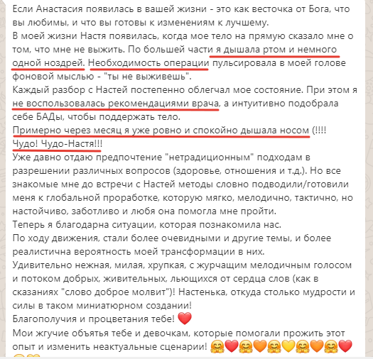

{kind=link}
Куда обратиться, если возникнут вопросы по оплате
Напишите в личные сообщения


Трансформационная программа
Создай реальность мечты, используя силу своей Души
трансформационная программа
Раньше я жила с ощущением, что проживаю не свою жизнь и она проходит мимо меня. Мне не приносило радость ничего, отношения не складывались ни с родными, ни с мужчинами, ни с родителями.
Работала я на работе которая не приносила ни удовольствия, ни денег, работала без выходных, а получала копейки. Здоровье катилось вниз, различные диагнозы, операции. По всем фронтам в моей жизни были пробелы. И тогда я решила разобраться почему же так и как это исправить.Я была в вечном поиске, находила ответы, но появлялись новые, какой-то замкнутый круг и жизнь моя не менялась, всё те же грабли.
Однажды Я встретила курс, который помог мне встретиться со своей Душой и исцелиться в её потоке. Я освободилась от боли, трансформировала своё состояние. Вышла из родовых сценариев и моя жизнь поменялась. И я начала проявлять свои таланты и навыки. Я нашла дело по душе и иду путём своей души, проживая свою собственную жизнь.
Так родилась моя программа, где помогаю пройти мой долгий путь за более короткий срок!
Ирина Веселкова, вышла из тяжёлого эмоционального состояния, научилась слышать себя и встретила достойного мужчину, после долгих неудач
https://youtu.be/88y7yZhXk_wМария Батура. Результат: Исцелила полипы в носу, вышла в ресурсное состояние.
Светлана Ефремова. Результат Запрос был про деньги, что они не приходят вот уже пол года от любимой деятельности и уже на следующий день после сессии появился заказчик - деньги пришли и самое главное Света находилась в потоке и всё стало ладно и легко складываться
https://youtu.be/mJuZ4q2iHqUУ тебя появится энергия, ты начнёшь развивать способность оставаться в настоящем моменте и почувствуйешь состояние счастья
Разблокируешь свои чувства и освободишься от зажимов и блоков. Почувствуйешь лёгкость в теле и в душе. Освободитесь от застарелых чувств, которые мешают чувствовать счастье в настоящем моменте.
Прокачаешь свою ценность и выйдешь в состояние я достойна всего самого лучшего. Ты начнёшь притягивать всё самое лучшее, подарки, деньги, возможности
Отпустите обиды на маму и примите свою женственность и сексуальность. Ваши отношения с окружением изменятся в лучшую сторону.
Отпустите все обиды на папу и почувствуйте опору внутри себя. Вы получите толчок и направление для реализации своего предназначения и достойного вас уровня дохода.
Освободишься от убеждений, которые мешают тебе свободно проявляться и реализовать себя в своём творчестве. Заниматься тем, чем хочется и получать от этого удовольствие.
Выйдешь из повторяющихся ситуаций и историй в твоей жизни. Перезапишешь свой жизненный сценарий. Где ты свободно и легко двигаешься в достижении своих мечт и желаний.
Определишь свои таланты, раскроете свой творческий поток и в твоей жизни начнёт всё происходить будто само собой. Легко и просто.